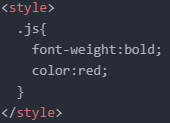

style태그
& 선택자
이전 페이지에서 CSS를 웹페이지에 삽입하는 방법으로써
속성이라고 하는 HTML 문법을 이용하는 방법을 살펴봤고,
이번 페이지에는 좀 더 효율적인 방법을 살펴보자.
바로 '선택자' 라고 하는 것.
임의의 문장
JavaScript is 명일 the world's most popular programming language.
JavaScript is the programming 명일 language of the Web.
JavaScript is easy to 명일 learn.
This tutorial will teach 명일 you JavaScript from basic to advanced.
*무색무취의 태그사용
div, span
div : 화면 전체를 쓰는 태그
span : 그 단어만 쓰는 태그
div와 span은 같은 용도 인데,
화면 전체를 쓰냐, 쓰지 않느냐 차이만 있다고 일단 생각하면 된다.
우선 제어하고자 하는 단어를 span으로 감싸고
이 감싼 태그에 style을 쓰고 얘를 진하게 표시해보자.
*검색 - CSS text bold

JavaScript is 명일 the world's most popular programming language.
JavaScript is the programming 명일 language of the Web.
JavaScript is easy to 명일 learn.
This tutorial will teach 명일 you JavaScript from basic to advanced.
이렇게 진하게 표시되는 것을 볼 수 있다.
그런데 만약 문장 내의 '명일'이라는 단어의 개수가 1억개라면?
그리고 그 단어를 계속해서 수정해야 한다면 어떻게 해야 할까?
바로 이러한 문제를 해결하기 위해서
CSS에는 아주 환상적인 기능이 마련되어 있다.
style 태그의 사용
style 태그는 마치 script 태그처럼
웹브라우저에게
'style태그 안에 있는 태그는 CSS다.'
라는 것을 알려주는 역할을 하는 '구분자' 이다.
그럼 이제 웹페이지 안에 있는 1억개라고 가정한 '명일'이라는 단어 부분을
span class = js 로 묶는다.

그리고 이제 웹브라우저에게
'나는 이 웹페이지에 있는 class값이 js인 모든 태그에 대해서 font-weight를 bold로 하고싶어.'
라고 얘기하면 된다. 그리고 추가로 글씨 색도 빨간색으로 변경해보자.

*여기서 중요한 점은 js 앞에 점(.)을 찍지 않는다면
이 웹페이지에 있는 태그의 이름이 js인 태그를 가리키는 것이다.
우리가 원하는 것은 class값이 js인 것이다.
따라서 약속되어 있는 점(.)을 js 앞에 찍어줘야 한다.
출력 값 =
JavaScript is 명일 the world's most popular programming language.
JavaScript is the programming 명일 language of the Web.
JavaScript is easy to 명일 learn.
This tutorial will teach 명일 you JavaScript from basic to advanced.
- 생활코딩1)HTML+JS (script태그)
- 생활코딩2)HTML+JS (이벤트)
- 생활코딩3)HTMl+JS (콘솔)
- 생활코딩4)문자열과 숫자
- 생활코딩5)변수와 대입연산자
- 생활코딩6)웹브라우저 제어
- 생활코딩7)CSS기초 (style속성)
- 생활코딩8)CSS기초 (style태그)
- 생활코딩9)CSS기초 선택자
- 생활코딩10)
- 생활코딩11)
- 생활코딩12)
- 생활코딩13)
- 생활코딩14)
- 생활코딩15)
- 생활코딩16)
- 생활코딩17)
- 생활코딩18)
- 생활코딩19)
- 생활코딩20)
2022.06.14 김명일
유트브 링크